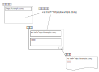

個人ニュースサイト支援ツール 概要
個人ニュースサイト支援ツールとは？
個人ニュースサイトの更新を支援するツールです。 タスクトレイに常駐してクリップボードに指定した文字が含まれていた場合に、ニュースに対するコメントを記載するためのウィンドウが開きます。 コメント入力後に完了ボタンを押すとあらかじめ指定したテキストファイルに内容が書き込まれます。
下記のようなアンカータグを生成する機能と併用して使うことを想定しています。
使用イメージ
ダウンロード
機能一覧
- クリップボード監視
- ニュースコメント入力支援
- 情報元入力支援
- カテゴリ毎の保存
- カテゴリを使用した場合の結合機能
使い方
インストール後に起動すると最初に設定画面が開きます。最初に設定を行ってください。 各種設定項目の意味については設定ウィンドウページを、どのように設定したらいいか分からない場合は、設定例ページを参照してください。
詳細説明
各メニュー、ウィンドウの説明等についてはそれぞれのページを参照してください。